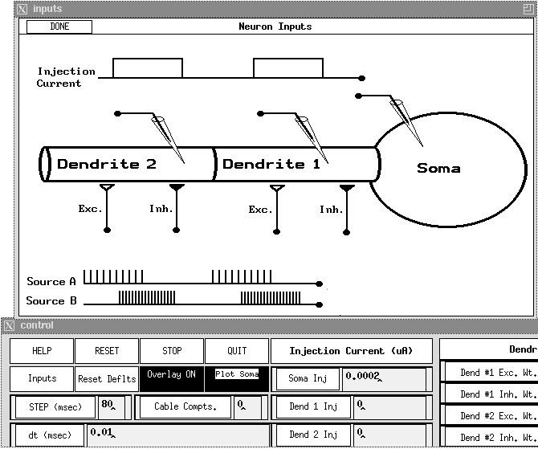

Return to the main page
Return to the main page
The Neuron tutorial is incorporates features of the previous two simulations in order to allow one to explore temporal and spatial summation of synaptic inputs. It is explored in Chapter 6 of The Book of GENESIS.

Description:
A portion of the screen display for the Neuron tutorial. The HELP window at the top shows a diagram of the model neuron, and the types of inputs which are available. Part of the "control" panel is shown at the bottom, with buttons and dialog boxes to control the simulation. Other buttons invoke popup menus to control most model parameters and the timing of the various types of inputs.